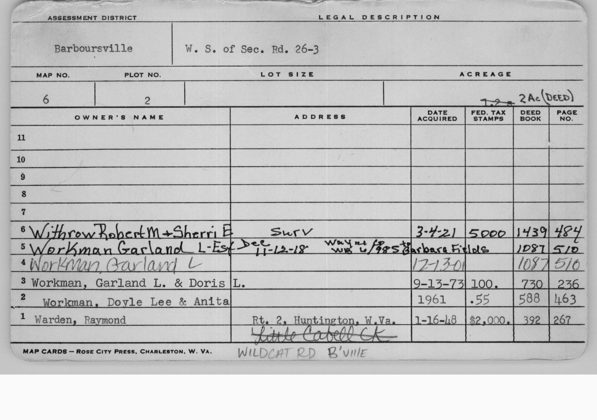

On April 16, 2025, licensed West Virginia Professional Surveyor Duane K. Bowers (PS #1995, Sunshot Surveying Services, Red House, WV) completed a retracement survey of what is now Tax Map 6, Parcel 2, Barboursville District, Cabell County — the 1.94-acre parcel transferred from Robert M. and Sherri E. Withrow to Bryson R. and Mikalia C. W. Cutler. The survey is recorded as project 2024-61 (Withrow to Cutler) and references Deed Book 1439, Page 484 and Deed Book 588, Page 463 in the Cabell County Clerk's Office.
A retracement survey — as opposed to a new boundary survey — follows and confirms existing deed calls and physical evidence already in the record. Bowers traced the prior deed descriptions and found the historic boundary markers: old fence lines, a 12×12-inch stone set on the ridge, a stone pile, old locust fence posts, and a rotten chestnut oak snag still visible at one corner call. New 5/8-inch rebar monuments with plastic caps (labeled "SUNSHOT WVPS 1995") were set at each corner to establish durable, legally defensible markers going forward.
The survey plat carries the precise description: "Situate on a dividing ridge between Merrits Creek and a tributary to Little Cabell Creek, Barboursville District, Cabell County, West Virginia." This single phrase captures the fundamental character of the land. The parcel occupies the spine of a narrow Appalachian ridge — one of the countless finger ridges that radiate outward from the county's hill country. Rainwater falling on the western slope drains toward Merrits Creek; water on the eastern slope feeds a tributary of Little Cabell Creek. You own both sides of that watershed divide.
The parcel's elongated, irregular shape — roughly 425 feet along its longest axis running north-northwest — reflects the geometry of the ridge itself. The road frontage along Wildcat Road (WV 26/3) anchors the southern end. The parcel narrows and follows the ridge northward, bounded on the west by the McCallister property (T.M. 5, Parcel 120, formerly part of the Houchins Estate) and on the northeast by the remaining Withrow land (T.M. 6, Parcel 19.3).
One of the more historically evocative features of the survey is the abandoned section of Hall's Hill Road — also referred to in older deeds as the Ridge Road — which crosses the property as a 30-foot right of way. The survey notes that its existence and alignment were "purported by an adjoining landowner." This road's presence on the ridge pre-dates the current property configuration and likely served as the primary access route for the hill community long before Wildcat Road was improved. The survey makes the parcel subject to this right of way, and its physical trace — likely visible as a worn path or depression along the ridge — is part of the land's layered history.
The parcel shares boundaries with three neighbors. To the north and northwest, Donald L. and Linda L. Rose (T.M. 6, Parcel 1; D.B. 1167, Page 448) hold land recorded in Map Book 13, Page 111. To the west and southwest, Paul and Donna L. McCallister (T.M. 5, Parcel 120; D.B. 908, Page 279) hold what was originally Part of Lot 4 of the Houchins Estate — a subdivision name that hints at an earlier generation of organized land development in this hollow. To the east, the remaining Withrow family land (T.M. 6, Parcel 19.3) continues.
The Cabell County Assessor's Office maintains a physical map card for Tax Map 6, Parcel 2 — a handwritten record that traces every ownership transfer since at least 1948. This document, labeled "W. S. of Sec. Rd. 26-3" (West Side of Secondary Road 26-3, which is Wildcat Road), is a window into seven decades of people who held this ridge before it came to you.

Reading the card from oldest to most recent, the parcel passes through six hands before reaching yours:
Your Wildcat Road property sits in the dissected hill country of southwestern West Virginia, on the eastern margins of Cabell County. Geologically, this landscape is part of the Appalachian Plateaus physiographic province — not the folded and faulted Ridge and Valley country further east, but a deeply eroded tableland carved by millions of years of stream erosion into the sinuous hollows, ridgelines, and tributary valleys that define Appalachian character here.
The bedrock beneath your feet is Pennsylvanian-age sedimentary rock — shales, siltstones, sandstones, and thin coal seams — originally deposited on the floor of an ancient tropical sea roughly 300 million years ago. Over geologic time, continental collision, uplift, and erosion shaped these flat-lying strata into today's hills. The underlying sandstone and shale sequence is typical of the Pottsville and Kanawha Groups found throughout this portion of West Virginia.
The local topography is controlled by these strata: ridges cap the more resistant sandstone beds while valleys follow the weaker shale. The terrain around Wildcat Road is characteristic of this "knobs and hollows" landscape — narrow ridgetops separated by sharp drainages that feed into the Guyandotte River watershed to the south and east.
"With few exceptions, the consolidated bedrock throughout West Virginia is sedimentary rock initially deposited as soft sediments during the Paleozoic Era, a geologic period that lasted from more than 570 million to about 230–240 million years ago."
— WV Encyclopedia, Geology entry
The broader watershed context is the Guyandotte River, which flows roughly east-to-west through the county before emptying into the Ohio River near Huntington. Small tributary streams dissect the hills around Wildcat Road, draining into this system. Salt Rock — just a few miles south along Route 10 — sits at the Guyandotte itself, and its name reflects the ancient salt wells once worked there.
Soils in the Cabell County hill country typically belong to the Gilpin-Muskingum-Shelocta series — moderately deep, well-drained soils developed from acid shale and sandstone residuum on sloping upland terrain. These soils have historically supported mixed hardwood forest (oak-hickory-maple associations) and limited agricultural use on gentler slopes and hollow bottoms.
The land that would become Cabell County was home to Indigenous peoples for thousands of years before European contact. The earliest human presence in West Virginia dates to Paleo-Indian hunters around 11,000 BCE. By the Woodland Period (roughly 1000 BCE – 1000 CE), the Adena culture had established a sophisticated presence throughout the Ohio Valley, including what is now Cabell County.
The Adena were hunters, gatherers, and early agriculturalists who constructed the conical earthen burial mounds that still dot the West Virginia landscape today. They lived in circular pole-and-bark houses and maintained extensive trade networks reaching the Great Lakes (copper), the Appalachian Mountains (mica), and the Gulf Coast (marine shells).
One of the most significant archaeological sites in Cabell County lies just a few miles southeast of your property: the Salt Rock Petroglyphs, carved on large sandstone boulders along the Guyandotte River. Documented by Smithsonian researchers Squier and Davis in 1846 and published in the landmark 1848 volume Ancient Monuments of the Mississippi Valley, these carvings include a striking six-foot shaman figure wearing a "weeping eye mask" — a motif connected to Algonquian ceremonial traditions — as well as depictions of deer, beaver, fish, and other animals. Stylistic analysis places the carvings at approximately 1600 CE, with Indigenous settlement in the Salt Rock area documented as early as 1000 CE.
"Fort Ancient Indians occupied villages along the banks of the Guyandotte River between Salt Rock and West Hamlin... The main village was situated where the river makes an elbow bend with burial grounds nearby."
— Fort Ancient Indians at Salt Rock, WV: A Personal Account
These Fort Ancient peoples cultivated corn, beans, and squash in the river bottoms, fished and gathered mussels from the Guyandotte, and produced shell-tempered pottery. Their presence in this landscape was continuous and intimate: they knew every ridge, hollow, creek, and salt lick in the area that now includes your property.
By the 1700s, the Cabell County area had become shared hunting grounds used by the Shawnee, Mingo, and Seneca. The Shawnee used the forested Appalachian hills as hunting ranges. Both groups allied with the British during the Revolutionary War and continued to resist settler encroachment until the early 1790s.
European-American settlement of the Cabell County hills came haltingly, slowed by Indigenous resistance and the rugged terrain. Thomas Hannon, who arrived in the early 1790s, is regarded as the county's first permanent English settler. The Savage Grant of 1772 — a land grant to John Savage and 60 veterans of the French and Indian War — was one of the first formal land conveyances in the region.
Barboursville, the nearest incorporated town to your property, was founded in 1813 and served as Cabell County's original county seat. The James River and Kanawha Turnpike — built on the advice of George Washington along an ancient Indian trail — was extended to Barboursville in 1814, connecting the community to the broader Virginia road system and making it a waystation for westward migration.
While Barboursville grew as a town center, the surrounding hill country — including the area near Wildcat Road — was settled by small farm families who cleared hardwood timber for homesteads, raised livestock on the forested ridges, and grew subsistence crops in the creek bottoms. The Ona community, just a few miles from your parcel, was one such rural settlement documented by the WVU Agricultural Extension Division as early as 1925.
Cabell County's residents were sharply divided when Virginia considered secession. The county voted to remain in the Union even as Virginia as a whole voted to leave. The first Civil War engagement in the county — the Battle of Barboursville on Fortification Hill in 1861 — saw Union volunteers disperse a local Confederate militia. When West Virginia was admitted to the Union on June 20, 1863, the hill farms of the Wildcat Road area became West Virginia land.
The arrival of railroad magnate Collis P. Huntington transformed Cabell County. In 1871, Huntington laid out the city bearing his name as the western terminus of the C&O Railroad. This single act drew industry, workers, and capital to the county at unprecedented scale. By the early 1900s, the county's economy included glassmaking, flour milling, furniture manufacturing, and international nickel processing.
The hill communities around Wildcat Road participated primarily through timber and subsistence farming supplemented by cash income from nearby Huntington and Barboursville. Coal seams underlie much of Cabell County, and small drift mines were worked throughout the hills.
The Ohio River Flood of January 1937 was the worst natural disaster in Cabell County's recorded history. The Ohio crested at over 69 feet in Huntington, inundating the city's lower streets. While the hill communities above the flood line were spared the worst, the economic disruption was county-wide and accelerated the shift of residential development toward higher ground — the ridges and hills like those surrounding Wildcat Road.
Huntington was the site of West Virginia's first commercial radio station (1923, now WRVC) and its first television station (WSAZ-TV, 1949) — a city that punched well above its weight in culture and commerce relative to its size.
The completion of Interstate 64 in the 1960s reshaped Cabell County's geography, opening the hill country east of Huntington — including the Barboursville and Ona corridor — to suburban residential development. What had been working farm and timber land began converting to residential use as commuters could reach Huntington or Barboursville in minutes.
Cabell Midland High School, located in Ona, was created by the 1994 consolidation of Barboursville High and Milton High Schools — the high school serving the Wildcat Road community. The Huntington Mall in Barboursville established that corridor as a major regional retail hub.
CSX Transportation shut down its Huntington division operations in 2016, ending a major era of railroad employment in the county. The economy has since pivoted toward healthcare (Mountain Health Network), education (Marshall University), and service industries.
The Wildcat Road area represents the "rural suburban" character that defines much of Cabell County's residential landscape: wooded parcels on Appalachian ridges and hollows, accessible by secondary roads, within easy commuting distance of Huntington and Barboursville. Building on family land here is part of a generations-long tradition of Cabell County families claiming a place on these hills.
Cabell County in 2026 is home to approximately 94,350 residents. Major employers are the Mountain Health Network, Cabell County Schools, and Marshall University. The median home value in 2020 was $129,000, with a home ownership rate of 63.7%.
The forested Appalachian hills of Cabell County support white-tailed deer, wild turkey, Eastern box turtle, and a diverse songbird community including wood thrush, scarlet tanager, Kentucky warbler, and ovenbird. The Guyandotte River system supports smallmouth bass and muskellunge. Spring wildflower displays — trillium, bloodroot, jack-in-the-pulpit, wild ginger — are a signature of intact Appalachian forest hollows.
Regional recreation resources include Ritter Park in Huntington (70 acres), Barboursville Park with its 17-acre Lake William, Kiwanivista Park along US 60, and the Greenbottom Wildlife Management Area along the Ohio River.
The communities near Wildcat Road combine a deep Appalachian rural character with suburban convenience. Neighbors tend to be long-established families with generational ties to the land, alongside newer arrivals drawn by affordability and quality of life — forested hills, family land, community rootedness, and a quiet pride in the landscape.
Your parcel falls within the Barboursville, WV USGS 7.5-minute quadrangle. The following editions are available as free downloads from USGS TopoView — each a snapshot of how this landscape was mapped and understood at the time.
The West Virginia State Historic Preservation Office (SHPO) maintains an interactive map of documented archaeological sites and historic properties. Given the proximity of your ridge to the Salt Rock Petroglyph site and the Guyandotte River corridor — both areas of documented pre-contact activity — it is worth checking the SHPO viewer for any recorded sites before ground disturbance for construction.
All maps below are interactive. Use the layer control (⊞ top-right of each map) to switch between Street, Satellite, Topographic, and Hybrid views. Click the property marker for coordinates and parcel details.
| Source | Type | URL |
|---|---|---|
| WV Encyclopedia — Cabell County | County History | wvencyclopedia.org ↗ |
| Wikipedia — Cabell County, WV | County History | wikipedia.org ↗ |
| Salt Rock Petroglyphs | Archaeology | wvexplorer.com ↗ |
| WV Encyclopedia — Petroglyphs | Archaeology | wvencyclopedia.org ↗ |
| WV Encyclopedia — Mound Builders | Archaeology | wvencyclopedia.org ↗ |
| Prehistory of West Virginia | Archaeology | wikipedia.org ↗ |
| Cabell County History — CabellCounty.org | County History | cabellcounty.org ↗ |
| Cabell County Doors to the Past | Local History | cabellcountydoorstothepast.com ↗ |
| WV Culture — Cabell County NRHP Listings | Historic Preservation | wvculture.org ↗ |
| WV Historical Geology | Geology | wvgs.wvnet.edu ↗ |
| WV Archives — Cabell County History Sources | Bibliography | wvculture.org ↗ |
| Barboursville — Wikipedia | Town History | wikipedia.org ↗ |
| Cabell County Assessor | Property Records | cabellassessor.com ↗ |
| WV Property Viewer (MapWV) | GIS / Parcel | mapwv.gov ↗ |
| BLM GLO Records | Land Patents | glorecords.blm.gov ↗ |
| FamilySearch — Cabell County Genealogy | Genealogy | familysearch.org ↗ |